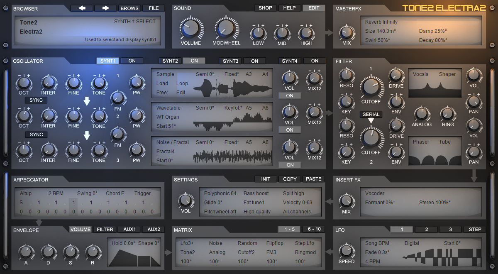
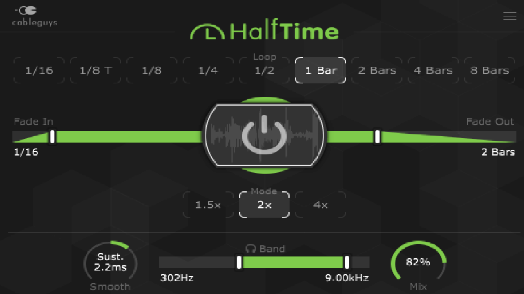
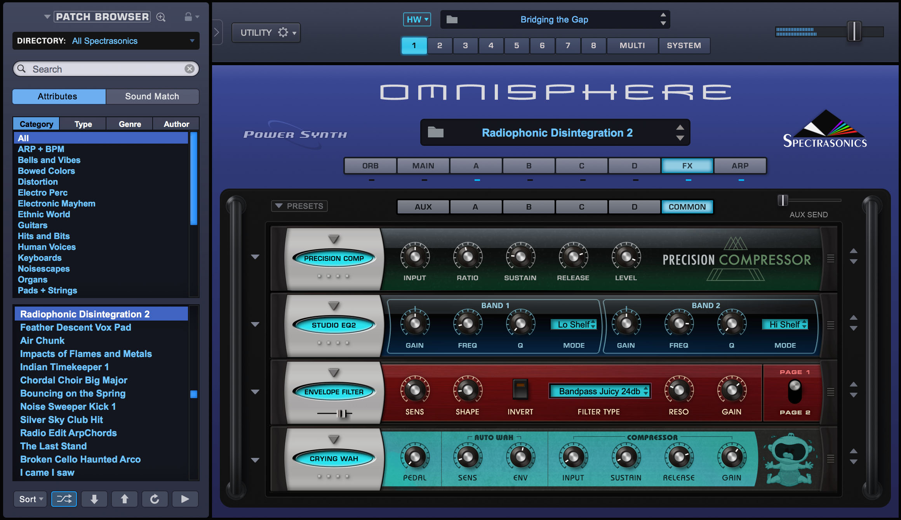
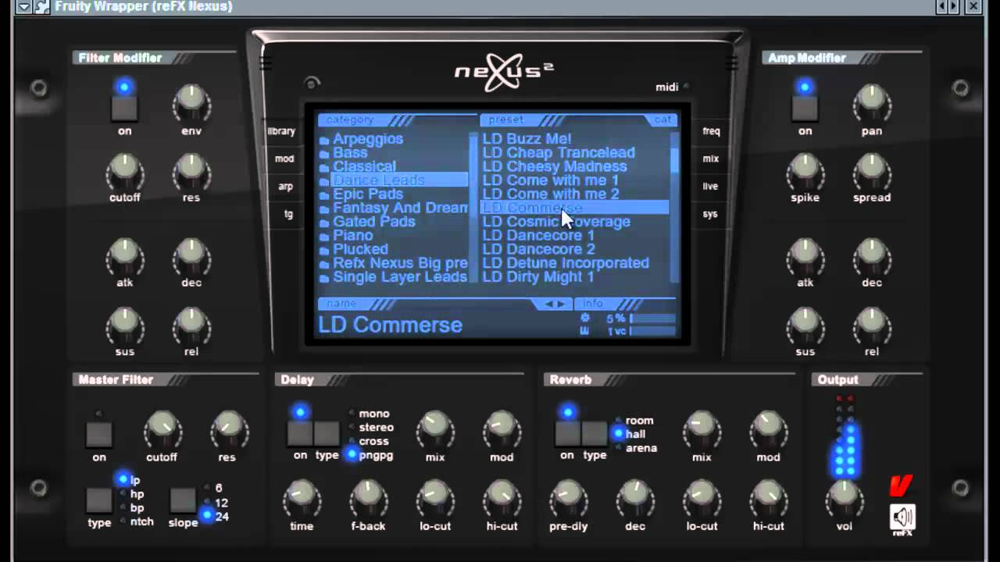
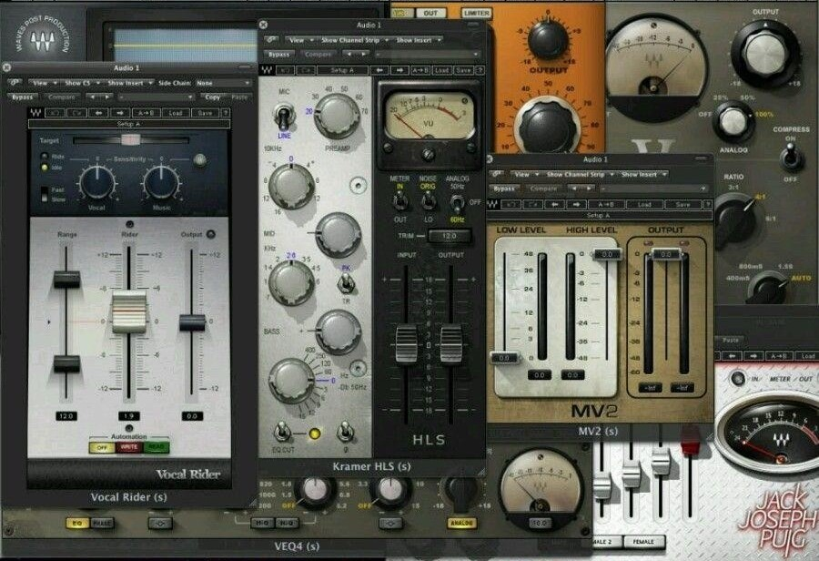

HOME
DAW's
VST'S
NEWS
VIDEOS
Popular VST'S:

Electra X is a virtual synthesizer created by Tone 2. Tone 2 have made many other sucessful synthesizers, however Elextra X is by far the most popular and commonly used.

Halftime is a effect plugin which allows you to time stretch the signal going into the plugin. This gives it a halftime effect, this plugin also allows you to stretch the signal to 1.5x and select the frequencies to be effected by the plugin.

"Omnisphere is an award-winning, remarkably versatile multi-timbral Power Synthesizer, based on Spectrasonics latest synthesis and hi-definition sampling engine called STEAM."

Created by reFX, Nexus2 is an all-in-one ROMpler filled with a seemingly endless number of production-ready sounds. It provides an easily accessible library of instruments that allows you to create high quality songs quickly and efficiently.

From essentials like reverb, compression, noise reduction, and EQ to modeled analog hardware, surround and post production tools, artist signature collections and beyond, Waves Bundles feature the best of Waves GRAMMY® award-winning plugins.
REPORT